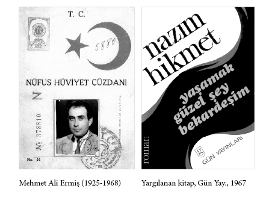

TIMARHANE BANA
NEYZEN TEVFİK’İ TANITTI
Neyzen Tevfik (1879-1953)
Onu tanımayan yoktur sanırım o kuşakta ve bizim kuşakta. Yeni kuşak merak sarsa, belki biraz tanıyabilir onun kişiliğini şiirlerinden...
Görmek mümkündü onu Beyoğlu’nda, Havuzlu Beyazıt Meydanı’nda, Küllük Kahvesinde,1 Kumkapı’da, Samatya’da... İstanbul’un her yerinde, her semtinde, hemen her meyhanesinde. Ya yarı sallanır, ya tam sallanır durumda, ister cebinde para olsun, ister meteliği olmasın, ceplerinde defteri, kurşun kalemi, neyleriyle, nısfiyeleriyle...
Onunla ilk Özcan Meyhanesi’nde karşılaşmıştım uzaktan uzağa. Beş kuruşa, yedi buçuk kuruşaydı o zamanlar rakının tek kadehi. On kuruşa kulplu bardaklı bira ve çeşitli mezeler... Bursa Sokağı’na yakın sokaklardan birindeydi Özcan Meyhanesi. Sanatçılar çıkardı o günlerde oraya. Ve sanatçıları sevenler. Oraya, Degüstasyon’a, Fişer’e, Çiçek Pasajı’na, Tuna Birahanesi’ne. Bilinen yerlerdi sanatçıların çıktığı yerler... Meyhaneler, kahveler, pastaneler, Nisuaz, Petrograd, Moskova ve Viyana kahveleri...
Benim onu asıl tanımam kahvelerde, meyhanelerde olmadı. Benim onu asıl tanımam, Bakırköy Akıl Hastanesi’nde olmuştu:
İnsan haysiyetini boğazlayarak, kışın soğuk bir gününde, dilim bağlı, dört duvar arasına koydular beni. En uysal delilerin koğuşuydu bu. Her adam kendi dünyasını yaşıyordu. Birkaçı sobanın çevresinde halkalanmışlar, birkaçı pencerelerden dışarıyı seyrediyordu. Biri parke taşlarını sayıyordu. Bir başkası bir köşeye büzülmüş, sigarasını avucunun içinde saklayarak içiyordu. Üçü beşi ellerini arkasına bağlamış, üçü beşi sıralar üstünde ayakta, başlarını havaya sallayarak mırıldanıyorlardı. Çoğu yalınayaktı. Zaman zaman susan, zaman zaman yumruklarını başına ve bacaklarına çarparak dövünen, acı acı uluyan biri çevremde üçgenler dörtgenler çizerek çömeliyor, kalkıyor, gene dolaşıyordu. İki Yahudi hasta, el ele, birbirlerinden hiç ayrılmıyorlardı.
Burada da imtiyaz vardı.
Her sınıftan, her işten, her çeşit insan yan yana yaşıyorduk. Ama pistonlulara ayrı davranış...
Çoğunun üstü başı yırtıktı. Yatağına uzanmış biri kitap okuyordu. Saçları ensesini aşmış ressam, sayfaları yırtarcasına desenler çiziyordu. Şahlanan at resimleri.
Kaptan yere çökmüştü. Gözlerini yere eğdi, tükürdü. Balgamında gemiler gözlüyor, söyleniyordu:
– Gelecek pazara!.. Kızım, karım, bana bir bavul getirecekler, temiz çamaşırlar, tertemiz, pazara!..
Ve şoför:
– Bekle!.. Zor gelecek!.. Gelir inşallah!.. diye alay ediyordu. Kaptan boyuna tükürüğüne bakıyor:
– Pazara!.. diyordu, gemi yanaşacak, rıhtımda karım, nurtopu çocuklarım!.. Ben köşkte, kaptan köşkünde!.. Vapur bir daha ötmeyecek!..
– Bir sigara versene!.. dedi terzi.
Şoför seslendi:
– Bekle, hele vapur, gelsin karısı bavulunu getirsin, kaptan bize paket paket sigaralar ikram edecek!.. Yalan mı kaptan?..
Bir deli acı acı söylendi:
– İskeleyi, vapuru unutmaya bak, beklediğin gelmeyecek denizden!..
– Dilim kopsun!..
– Havada bulut, unut unut!.. Haline köpekler acısın!..
– Halimize!..
– Çok şükür ben terziyim... Elime bir makas vermişler, kes babam kes!.. Fabrika dokudu ben kestim, ben giydirdim eşi dostu... Çoğu da veresiye!.. Ama şimdi bir hırka bile vermiyorlar sırtıma!.. Üşüyorum, üşüyorum!..
Yanıma geldi, sigara içiyordum.
– Bir sigara versene, içim ısınsın, dedi.
– Başka sigaram yok, dedim.
En değerli şey sigaradır burada. Kimse kimseye izmarit bile veremez. Kuru ağaç yaprakları tütündür, gazete parçaları kâğıt. Sarıp sarıp içerler. Eğer yazdan yaprak toplamamışlarsa izmarit için kavgalar çıkar, önlenmese cinayet olur.
Terzi yalvarıyordu:
– Allahım, büyük Allahım, büyüklüğüne sığınıyorum, bana bir tek sigara gönder!..
– Yalvarma, rahatsız olur!..
Dövünen adam acı acı uludu, dövündü, dörtgenler çizdi durdu.
Şoför homurdandı:
– Susturun şunu be, içimi parçalıyor!..
Bu hikâye böylece sürebilir. Bir roman olabilir.
Gene böyle bir günde, hastalar akşam saat altı sularında yataklarına yatırılmıştı. Söz dinleyen uysal hastalar. Kimsesizler, itilip kakılmışlar, hor görülmüşler, çıldırmışlar, yalnızlar.
Gece yarısını çoktan geçmişti zaman...
– Oh!.. of!..
Sesleri çınladı önce avluda, sonra koğuşta... Bitmez tükenmez “Of’lar, oh’lar ve ah’lar”...
Gelen Neyzen’di.
Zilzurnaydı, yıkılmış haldeydi.
– Üstat geldi!.. dedi hastabakıcılardan biri.
Üstü başı berbattı. Düşe kalka gelmişti, belli...
– Kim getirdi seni üstat, buraya? dedi nöbetçi doktor.
– Kim mi getirdi beni?.. Kendim geldim, tıpış tıpış, ayaklarımla!.. Benim haysiyetimle oynadılar mı, kalkar gelirim buraya!.. Haysiyetli insanlar arasına!.. Burası benim evim!.. Evim burası!.. Evim!..
Üstünü başını temizlediler, yıkadılar, temiz pijama giydirdiler. O hâlâ “oh!..” çekiyordu.
Koğuşta bölme bölme, sonradan bölünmüş birkaç oda vardı. Bu odaların birinde yanındaki karyola boştu. Oraya yatırdılar onu.
Duvarın tahta bölümüne birkaç çivi çaktım, defterini kalemini sicimle astım. Neylerini nisfiyesini yerleştirdim, kendine gelince çok sevinmişti buna...
– Sen kimsin? dedi bana, necisin?
Söyledim, anlattım...
– Âlâ, âlâ... Demek sen Abidin Dino’nun arkadaşısın! Çok severim, çok severim onları. Severim, severim, severim...
Bir sözü tutturdu mu, tutturur da tuttururdu...
İğneler, ilaçlar, kusmalar, zor uyuttuk onu o gece.
Sabah erken uyanmıştı, durmadan “of” çekiyordu.
– Fahrettin Kerim gelince gelsin beni görsün, dedi.
Fahrettin Kerim başhekimiydi hastanenin. Gerçekten de gelip görmüştü viziteden önce onu. Hatırını, isteklerini sormuştu.
İyi bir çorba istiyordu önce, sonra söğüş, bir tavuk, sütlaç mahallebi ve komposto...
İkinci Harbin ortalarıydı. Alman orduları zaferden zafere koşuyordu. Nedense Hitler’e tutkundu üstat o sıralar... Ama Alman orduları kuşatılıp geriledikçe, o da gerilemeye, Hitler sevgisi erimeye başlamıştı. Bir şeyi tutturdu mu tutturur, ertesi günü de yüz seksen derece dönüverirdi... Nedeni yoktu bunun, öyle işte...
Haftada iki gün ziyaret günüydü hastanenin. Ama bizim için böyle bir şey bahis konusu değildi. Abidin Dino’lar, Arif Dino’lar, Asaf Halet Çelebi’ler, Sait Faik’ler vb. isteklerince ziyaretimize gelir, isteklerince otururlardı. Abidin Dino her gelişinde, onun karakalem portrelerini çizerdi. Konuşarak, kahkahalar atarak çizer, çizer, çizerdi. Hayranlığı vardı bu başa... S.E.S.2 dergisi çıkıyordu o zaman. Orda yazıyorduk yazılarımızı... Orda yayımlıyordu o günlerin önde gidenleri... “Bulunmaz bir yüz!” diyordu Abidin, “ne kadar çizsem doyamıyorum...”
Ve çizmekten yorulmaz, S.E.S.’te yayımlardı bu çizgilerini...
Ara sıra sinirlenirdi en olmayacak şeye.
Kıvır kıvır beyaz saçlı, lahana yüzlü, harita yüzlü Neyzen Tevfik yarı homurdanır, yarı susar, yemekleri beğenmez, küfreder, aklına estikçe de neyini veya nısfıyesini üflerdi...
– Getirin elbisemi; çıkar, kaçarım burdan da ha!.. Kimse beni tutamaz!.. Bu dünyadan da kaçarım ha!.. Adam gibi eşit davranın insanlara!..
Bu gözdağını sık sık tekrarlardı...
Bir gün tıp öğrencileri gelmişti hastaneye. Koğuş koğuş gezdiriliyorlardı. Bir sirkteymiş gibi eğleniyorlardı hastaları seyrederek... Öyle ya, kimi:
– Çörçil’le randevum var yarın, uçağı hâlâ hazırlayamadılar mı? Adam bekler mi beni? Çörçil bu! Londra’da buluşup Rozvelt’e gideceğiz. Waşhington’a! Özel kalem müdürüm de hep gecikir!.. Kovacağım onu bugün de gecikirse! diyor, kimi İsmet Paşa’ya, kimi Stalin’e, kimi Hitler’e sövüp sayıyordu. Görülecek, zevk alınacak şeylerdi herhalde bu görünüş onlar için. Etüt yapıyorlardı...
Bu arada üç güzel kız gelmişti bizim odaya. Birbirinden güzel üç kız. İçlerinden biri üstada:
– Bize bir şey çalar mısın? dedi.
– Ben hırsız mıyım kızım?
– Hayır, ney demek istiyorum.
– Ben çalgıcı mıyım?.. Ney çalınmaz, üflenir. Beni çalgıcı mı sandınız?
– Hayır ama...
– Hayırı bayırı yok!.. Ben, benim gönlüm isteyince üflerim.
Birbirlerinden üç güzel kız fena bozulmuşlardı. Onların bu haline üzüldü mü ne:
– Ver şunu! dedi bana birden.
– Neyi mi, nısfiyeyi mi? dedim.
– Nısfıyeyi, dedi.
Sonra üç güzeli yataklarımıza oturttu, başladı üflemeye. Uzun uzun, çok uzun uzun...
Önce kızlardan biri başladı ağlamaya, sonra ikincisi, sonra üçü birden... Sessiz sessiz ağlıyorlardı. Ne dokunmuştu onlara böyle?.. Yaşlı bir üstadın tımarhanede oluşu mu?.. Böyle büyük bir adamın bu hallere düşüşü mü?.. Ses’ti...
Sonra birden ayırdı nısfiyeyi ağzından:
Mehlika Sultan’a âşık yedi genç
Gece şehrin kapısından çıktı
Mehlika Sultan’a âşık yedi genç
Kara sevdalı birer âşıktı...3
– Neden kendinden değil de Yahya Kemal’den? dedim.
– Her şey, hepsi benden mi olsun? dedi, biraz da Yahya Kemal’i hatırlayalım. Benim şiirler ağır gelir bu genç güzel kızlara. Bu okuduğum tam onlar için. Hafif, nahif, güzel, tatlı.
Üç güzel çok istediler kendinden okuması için. Ama Neyzen uzun uzun baktı kızlara, uzun uzun süzdü onları, tepeden tırnağa kadar, okumadı...
Kızlar Neyzen’in elini öpmek için eğildiler:
– Ben hoca mıyım, papaz mıyım?.. dedi, çekti öptürmedi elini üç güzele.
Sen ne papazsın, ne hoca; sen, bir daha hiç gelmeye-ceklerden’din...
O bir filmde de oynadı. Bir frak giydirmişlerdi ona... Çok yakışmıştı siyahlar, o güzel başa... Bir konser veriyordu anıma göre. Ama pek beceremediğini sevemediğini söylemişti bu işi...
Gönlünce yaşamalıydı o, dörtgenler, çizgiler içine girmeden, dilediği gibi. Hiç kimseye boyun eğmeden.
Ve sonra aylar, aylar geçti aradan... Çiçek Pasajı’nda karşılaştık. Sev-İç Birahanesi’nde. İyice hoştu başı. Dilediği gibi içiyordu, dilediği gibi konuşuyordu. Bana çok kızgındı. Onu o tarihlerde Bakırköyü’nde bırakıp, ondan önce çıktığım için hastaneden...
Evet, dilediği gibi konuşuyordu. Onun dediklerinin birini söyleseydi başka biri götürürlerdi. O zamanlar götürmek âdeti boldu. Ama ona kimse dokunmazdı. Dokunulmazlığı vardı sanki denilebilir. Bir çeşit gelenek dışı...
Bir arife günü ona Küllük’te rastlamıştım. Oturttu beni yanına. Üst üste çay içtik. Bir değil, üç beş bardak. “Bu keser,” dedi. “İçki isteğini keser...” Sonra fakir çocuklarını toplamaya başladı yanına. Çay ikram etti onlara. Bir iki derken, çocuklar top top olmuş birikmişti çevremizde. İki sıra yaptı onları okul çocukları gibi. Kimi yalınayak, kiminin üstü başı yırtık pırtık...
– Haydi, dedi, şimdi Mahmut Paşa’ya.
– Ne olacak?
– Param var bu gün. Bu yetimler de sevinsin, yarın bayram, giydireceğiz bunları...
Giydirdi o gün o fakir fukara çocuklarını. Sonra gene meyhaneye. Rakıdan önce bir fincan zeytinyağı. Rakı çabuk çarpmasın diye.
“Kızdım,” deyip, kızına kızdığını anlatmıştın bana bir gün. Doğru muydu bilmem... Evde temizlik yapılıyormuş Pendik’te, tahta siliniyormuş...
– Baba basma! demiş.
Vay sen misin söyleyen!..
– Nasıl dersin, demişsin, sen babana, basma diye! Benim ayaklarımda ne var?
– Çamur var! dememişlerdir sana. Ama sen kızmışsın bir kere. Ötesi bahane. Vurmuş kapıyı çıkmışsın. Aylarca içmişsin hırsından... Hepsi bahane.
Nedeni bu değildi elbet... Evden çıkmak, kaçmak, içmek istiyordu canın. Ve arşınlamak her yeri... Sesinle doldurmak... Ama bir türlü bulamıyordun istediğini. Ve gece gündüz içmek, içmek, içmek...
Ve bulamadan öldün. İnanıyorum. Ve ağlayan o üç kız geliyor gözlerimin önüne. Fakir fukara çocukları ve o günkü deliler.
Akşam, 7.7.1968, s. 5
1 Küllük, 1940’ların ünlü kahvehanesi, Menderes’in İstanbul imar planıyla Beyazıt’ta yıkılan binalar arasındaydı.
2 S.E.S., 1940 Kuşağı’nın önemli edebiyat dergilerindendir.
3 Yahya Kemal, “Mehlika Sultan”, Kendi Gök Kubbemiz, ss. 79-80.
Neyzen Tevfik
Çizgi Fikret Muallâ
Orhan Veli Kanık (1914-1950)
Çizgi Zahir Güvemli
ORHAN VELİ’YLE
AYNI KADINI SEVMİŞTİK
Bu topraktan biriydi
Adı Orhan Veli’ydi
Elleri dost omuzunda
Yaşamak kaderiydi
Kendi gitti ismi kaldı yadigâr.
Çiçek verdi, gülesiye
Şiir verdi, kıyasıya
Yaşaması ölesiye
Kendi gitti ismi kaldı yadigâr.1
“Şu pis bedeni ayakta tutabilmek için her dakika ölen insanım...”
Gözlerini saksının yeşiline dikmiş düşünüyordu. “Bu söz kimin?” Bu söz kimin mi? Benim mi? Yoksa bir kitapta mı okudum?
Aman canım kimin olursa olsun, edilmiş ya! Ya bu saksıdaki çiçek? Ne çiçeği bu? Çiçek filan da değil! Yaprak! Bir yeşillik. Sipsivri bir yeşillik... “Padişah kılıcı”ymış bir ismi. Öbürü de “eşek kulağı”. Ne ilgisi var bu iki ismin birbiriyle? Yok... Ama tuhaf. İkisine de benziyor bu sipsivri yapraklar...
Ben Orhan’ı şekil olarak bu iki isimli çiçeğe çok benzetirdim...
Onu en iyi tanıyanlar, elbette ki benden önce tanıyanlardır. Çiçeği ve kadını. Okuldan, sıra arkadaşlarından, anılarıyla, aşklarıyla, doğruluklarıyla, yalanıyla, iyi veya kötü yönleriyle... Beni ilgilendiren bunlar olmadı ve olmayacak. Onun için güzel elleri vardı, sigarayı şöyle tutardı, sivilcesiyle oynardı demeyeceğim, kötü bir şairin dediği gibi...
“Şu bedeni ayakta tutabilmek için her dakika ölen insanım.” Ben bu sözü Orhan Veli için tekrarlıyorum.
Bir çelişme, en ufak bir çelişme beni binlerce rezil etmiştir kendi kendime. İşte o zamanlar hep baştan kara vurmuşumdur. Kavgaya hazır, mağrur çocuklar gibi sokaklara fırlamışımdır. Şehrin kıyı köşe eteklerine düşmüşümdür. Yalnız, hep yapayalnız. Balık kokan mahallelerden geçmişimdir. Yalnız, hep yapayalnız. Bu şehri gemiciler kadar bildim. Sonra en çıkmaz sokakları öğrettim onlara. Islık çalar gibi rahatça tükürmeyi, simit yemeyi, balık tutmayı onlardan öğrendim. Ve marul mevsiminde gemi kalçalarına arzulanmayı onlardan öğrendim. Denize bakıp homurdanmayı onlardan öğrendim. Delirmeyi, çıldırmayı, sonra susmayı onlardan öğrendim. Bu kökleri paçavra gibi yırtmayı onlardan öğrendim. Lazın meyhanesini, Yorgo’nun meyhanesini, Lâmbo’nun2 meyhanesini onlardan öğrendim.
Bir kadına tutkundum o sıra. Bilmiyordum Orhan’ın da aynı kadına tutkun olduğunu. O bana küs gibiydi, soğuk. Ben ona küs gibiydim, soğuk. Sonra sorduk kadına.
– Seni seviyorum, dedi kadın.
O uzaklaştı bizden uzun bir süre. Sonra Lâmbo’da karşılaştık bir akşam, canciğer olduk o ölünceye dek ikimiz.
Ömer Faruk Toprak “Lâmbo’da Bir Gece” yazısında bizden şöyle bahsediyor:
“Beyoğlu Balıkpazarı’na girerken çiçeklerin kokusundan nasibimizi aldık. Az sonra, sağ taraftaki sokakta Lâmbo’nun küçük meyhanesi önündeydik. İçerde Cahit Irgat demleniyordu. O alkolün yarısını yürütmüştü. Lâmbo o kurnaz gülüşüyle karşıladı bizi. Beş dakika sonra Orhan Veli kadehini bitirmişti bile. Baktım. Akşam karanlığı, dışarıdan içeriye sarkmaya başlamıştı. Lâmbo’nun az mumlu ampulleri daha da sarılaştırdı içerisini. Cahit Irgat, tezgâhın arkasında, dip tarafta tek başına oturduğu yerden kalktı. ‘Ben gidiyorum,’ dedi.
“Bir oyun ya da film işi için gitti.”
Şair dostum Ömer Faruk’un dediği gibi bir oyuna veya filme gitmemişimdir alkollü. Nedenli bir gidişti herhalde. Ama Orhan Veli’yi ve onu bırakacak bir neden olmalıydı o akşam.
Oysa Orhan Veli öldüğü gün 1950’de, o akşam randevumuz vardı saat 6’da. Lâmbo’da. Ölüm haberini Feridun Çölgeçen yetiştirmişti Lâmbo’ya. İnanmamıştım. Akşam gazetesine telefon etmiştim. Uzun bir sessizlik olmuştu telefonun öbür ucunda. Yakın dost olduğumuzu biliyorlardı, bir fısıltı geçti karşıda; neden sonra:
– Böyle bir ölümden haberimiz yok, dediler.
Oysa haberleri varmış... Sonra Cumhuriyet’ten öğrendim ölüm haberini.
Lâmbo, sonra işi köseleciliğe döktü. Geçen yıl intihar etmiş havagazıyla... Elimde olsaydı “Orhan Veli Meyhanesi” yapardım orasını. Kimler gelip geçmemiştir o tezgâhtan?.. Sabahattin Ali’ler, Sait Faik’ler, Cahit Sıtkı’lardan bugün yaşayan kimlere, kimlere dek. Aktörüyle, şairiyle, ressamıyla kimler, kimler...
Orhan’la sık sık, haftanın birkaç akşamı Lâmbo’da buluşurduk. Buluşmak değil, alışkanlıktı daha çok bu. Bir nevi züğürtlük, bir nevi kokozluk sonucu şarapla nefis körletmek, yarenlik etmek için... Yaprak4 dergisini çıkarıyordu. İstanbul’a gelip onu bulmak isteyen çoğu dost Lâmbo’ya bir kere olsun uğrardı. “Lâmbo, Lâmbo!.. denilen yer burası mı yahu? Tramvay sahanlığı, otobüs sahanlığı kadar bir yer burası!” Lâmbo meşhurdu artık. Lâmbo bile manzumeler karalamaya başlamıştı bize baka baka. Bizi dinleye dinleye. Orhan’la göz göze gelir, anlaşırdık:
– Yaşa be mösyö Haralambo! Biraz gayret, güzel şeyler yazacaksın...
Ertesi günün akşamı daha kötü şeyler okurdu tabii Lâmbo bize...
Sonra gene Marmara şarabına dökülürdü iş.
Orhan son birkaç şiirini ya burada yazmış, ya burada düzenlemiştir. Son şiirlerinden birini bana burada okumuştu. Kesekâğıdı gibi sarımtırak, büyükçe bir kâğıda eski Türkçe, kurşun kalemle yazılmış bir şiirdi. “Nasıl bulacaksın, dinle bak, dinleyecek halde misin?” demişti. Hep nazik, sorardı okumadan önce... Üç kişiydik o gün: Orhan, ben ve Lâmbo...
Sonra Fuad Ömer girmişti içeri:
– Neredesiniz ulan? Nerdesiniz be yahu? Haydi gidip rakı içelim ağız tadıyla...
Ne üzerine konuşulursa konuşulsun, kim için konuşulursa konuşulsun, iyi konuşulsun kötü konuşulsun, söze balıklama girmez, içkisini yudumlar, dinler görünür, belki dinlemez fikri sorulunca konuşur, sigarasının dumanı gözlerine kaçmış gibi kırpıştırır dururdu göz kapaklarını...
Ama söz konusu şiir olunca, dil olunca, biraz da fikir olunca tıkır tıkır dizerdi konuşmasını, o kısık o çatlak sesiyle usul usul. Güzel konuşmazdı, daha çok güzel susardı. Gençliğimden bu güne, gözlerim kadar dost bildiklerim vardı. Açlık yalnızlık gibi bir şeymiş bırakılmak. Şu meyhaneler de olmasa, nerede yazacaktım yazdıklarımı?.. Yalnızdım tüm ilgilerle. Kutsal şeffaf yalnızlık. Tüm çıkmazları aydınlığa vardırmak için. Anılar, kül rengi akşamlarda duman... Pırıl pırıl, parlak, zaman zaman... Ve gitmişlerin peşinden yazılmış yazılar ve söylenmiş şarkılar. Hepsi o kadar. O kadar.
Dostluk öylesine dostluktu ki bende, türkülerim türküleriyle iç içeydi sanırdım. Hepimizin hepimizde ter muhabbeti, ömür hakkı, ölüm hakkı, dostluk canı vardı sanırdım. Dostsuz yaşanılmaz bu şehirde sanırdım. Sensiz yaşanılmaz bu şehirde sanırdım. Ve bir gün dost sandığım dostlar gölgemi süpürmeyi düşündüler şehrin caddelerinden... Gölgemi çamur gibi fırlattılar peşimden. Sanmıştım ki bana öyle geliyor. Sanmıştım ki sen gidersen, ben gidersem, o giderse şehrin başı döner hasretten.
Her gidenin ardından üç beş anı, üç beş yazı. Ve sonra bir laf, “Ölenle ölünmez, başın sağ olsun”; ne kaba laf.
Şaşırır kalırım arada bir, apışır kalırım arada bir. Ölüm zaten “eşiğim” derim. Seni ararım, onu ararım, gidenleri ararım. Cesedimi ararım eşiklerimde. Vururum kendimi içkiye, şiire. Tüm çocuklar gülmeli derim, tüm insanlar gülmeli derim, tüm ocaklar tütmeli derim. Bütün acılar doymalı derim... Tüm gözler aydınlıkta olsun isterim. Ve seni düşünürüm. Sait’i düşünürüm, adaşım Cahit Sıtkı’yı düşünürüm.
Yağmur yağıyordu bir kış gecesi hani. Ben Ar Sineması karşısında bir pansiyonda oturuyordum. İlk katta. Sabaha karşıydı gece. Sen camı vurmuştun, muziplikler yapmıştın yağmur altında. Sırılsıklamdın tepeden tırnağa. Seni soymuştum, ovmuştum, çok öksürüyordun. Döşeği yere sermiştik, bölüşmüştük, konyak içmiştik, aynı kadını sevmiştik. Hiç kavga etmemiştik.
Ben dışarı giderken,4 sen de vardın rıhtımda, o günkü sözüm ona dost geçinenler, uğurlayanlar arasında. Mendil sallamıştık birbirimize. Sen kalemini çıkarmıştın, Kulüp sigarası arkasına:
Baka kalırım giden geminin ardından;
Atamam kendimi denize, [dünya güzeli]
Serde erkeklik var, ağlayamam.5
şiirini yazıp bana göndermiştin, Paris’e. İlk şekli buydu şiirin. Sonra “Paris’e geleceğim, geleceğim” diye yazmıştın. Bekletmiştin, gelmemiştin. Oysa param vardı o zaman, ikimiz yaşayacak kadar Paris’te. Biliyordun.
Dostumuz Melih Cevdet 1.2.1951’de Son Yaprak’ta6 demişti: “Orhan Veli fakir fukara ile, boyacılarla, garsonlarla, işçilerle gerçekten dostluk ederdi. Harpten önce bir gün fakir bir işçi ile tanışmıştık. Montör Sabri, sarhoştu, koltuğunda iki okka ekmek vardı. Boyuna evine geç kaldığından bahsediyor, ama bir türlü evin yolunu tutamıyordu. Ertesi gün Orhan, ‘Montör Sabri’ şiirini yazdı:
Montör Sabri ile
Daima geceleyin
Ve daima sokakta
Ve daima sarhoş konuşuyoruz.
O her seferinde,
‘Eve geç kaldım’ diyor.
Ve her seferinde
Kolunda iki okka ekmek.7
“Geçen yıl bir lokantada Orhan’ı gördüm. Yanında bir adam vardı. Tatlı bir muhabbete dalmışlardı. Orhan beni görünce ‘Montör Sabri’yi tanımadın mı?’ dedi.”
Melih Cevdet: “Benim için de herkes gibi büyük bir şair, büyük bir insan öldü,” dedi. “Ama bu kadar değil. Kolum, kanadım kırıldı. Azaldım. Eksildim,” dedi.
Cahit Sıtkı senin ardından: “Orhan Veli, ölümüyle, şimdiye kadar ciddiye alınmayan yeni Türk şiirini ciddiye aldırdı, bu şiire sevgi ve saygı gösterilmesi lüzumunu bütün halk tabakalarına kabul ettirdi,” diye yazdı. Ben de bu yazının başındaki şiiri.
Tanıyan yazdı, tanımayan yazdı senin için, şiirin için. Mümtaz Faik [Fenik] yazdı. Adviye Fenik yazdı. Vâlâ Nurettin yazdı. Hüsamettin Bozok yazdı. Fikret Adil yazdı o zaman. Sonra yeni kuşak Edip Cansever, Asım Bezirci ve başkaları. İyi yönlerini, eksik yönlerini.
Ve Ataç 2.12.1950’de Ulus’ta şöyle yazıyor:
“Bakıyorum da onun asıl güzel, asıl iyi şiirlerini ananlar olmuyor. ‘Tahattur’, ‘Söz’, ‘İllusion’, ‘Sereserpe’, ‘Cımbızlı şiir’ kimsenin aklına gelmiyor.
“Varsa ‘İstanbul Türküsü’, yoksa ‘İstanbul Türküsü’.
“Bir gün Nâzım Hikmet’e ‘Sence en kötü şiirin hangisidir?’ diye sormuştum: ‘Salkım Söğüt’ dedi. Öyle diyeceğini de biliyordum. Orhan Veli ‘İstanbul Türküsü’ şiirini yazdığı zaman kendisiyle çoktandır dargındım, ama bana öyle geliyor ki kendisi de beğenmezdi o şiiri, kendi sanatının dışında olduğunu bilirdi.”
Nâzım Hikmet, Orhan’ın öldüğü o günlerde hapisten yeni çıkmıştı. İhsan İpekçi’yle8 stüdyoya gelmişlerdi. Onun bir senaryosunu film yapıyorduk. Söz Orhan’a geldi:
– Çok içermiş doğru mu? dedi.
– İçerdik, dedim.
– Yazık, en verimli çağında gitti, dedi, yazık oldu, yazık oldu, çok yazık.
Akşam, 11.7.1968, s. 5
1 Cahit Irgat, “Birisi”, Irgatın Türküsü - Bütün fiiirleri, s. 121.
2 Lâmbo, bir zamanlar Beyoğlu’nun ünlü meyhanelerinden biri.
3 Yaprak (1.1.1949-15.6.1950, S. 1-28) Orhan Veli’nin yayımladığı ünlü edebiyat dergisi.
4 Cahit Irgat, 1948’de Fransa’ya gitti.
5 Orhan Veli, “Ayrılış”, Bütün Şiirleri, s. 123.
6 Orhan Veli’nin dergisi Yaprak, ölümünün ardından –arkadaşları tarafından– Son Yaprak adıyla –veda sayısını– yayımladı.
7 Orhan Veli, “Montör Sabri”, Bütün Şiirleri, s. 204.
8 İhsan İpekçi (1901-1966): İpek Film’in sahibi. “İhsan Koza” imzasıyla romanlar yazdı. Gazeteci, yazar ve politikacı İsmail Cem İpekçi’nin (1940-2007), Alev Ersoy’un babası; karikatürcü Ali Ulvi Ersoy’un (1924-1998) kayınpederi.
Orhan Veli Kanık
Fotoğraf Ara Güler
Orhan Veli Kanık
Çizgi Zahir Güvemli
HALİDE PİŞKİN SAHNEDE KENAR MAHALLE DİLBERİYDİ
Halide Pişkin (1906-1959)
O gün hüngür hüngür ağlamıştım. Gerçek sanmıştım yapılan işi. Oysa yalan işmiş yapılan, sanat diye...
Ölülerin ardından kötü konuşmamak gerekirmiş. Derler... Olur mu öyle şey?.. Büyüğü, küçüğü nerden çıkar o zaman insanın?.. Heykeller büstler niçin dikilir o zaman?.. Niçin yazılır bunca yazılar, destanlar, methiyeler, mersiyeler?..
İşin yalanı değilse de kolayıydı zaman zaman yapılan? O gün de bunun benzerleri vardı, bugün de var. Çalışmadan, bilmeden, öğrenmeden yapılan iş. Sükse için, para için, vitrin için. Kadını da var bunların, erkeği de. Ömürleri kumru gibi, güvercin gibi guruldamakla geçmiştir bunların. Ya da leylek gibi laklakayla. Çok zararları olmuştur bu guruldamaların, bu laklakaların. Adam çekiştirme, insanı yok etme halini almıştır bu guruldamalar. Yüze gülmeler, arkadan çelmelemeler... O günkü Darülbedayi’nin ektiği kötü tohumlar... Kadınlı erkekli bugün de yaşayanları var bunların. Var, var olmasına ama tersi olanlar da var sanıyorum.
1900’den sonraki yılları düşünebiliyor musunuz tiyatroda?.. Yazar Müfit Ratıp beyler var o zamanlar, aktör Burhanettin [Tepsi] beyler var. Gazete sütunlarına düşüyor kadın dedikoduları:
“... Sahneci temaşaya vaz’a muvaffak olduğum Namus piyesinin mütercimi olmak hasebiyle bâdemâ oynanmasına mâssade etmeyeceğinizi perşembe günü intişar eden haftalık gazetelerden birine yazmışsınız. Mukaddema tercüme ve oynanmak üzere bana tevdi ettiğiniz piyes o rütbe hâlâ-âlûd idi ki tashihi kabil olmadığından yeniden tercüme ettim. Eserin tekrar oynanması hakkı size değil bizzat bana aittir. Bizi o yolda neşriyat ve tenkidata; sâhneye ademi kabulünüzden mütahassil yeisin sevk eylediğine eminim. Fakat siz de bilirsiniz ki sahneler vekayii âşıkanenin bir cilvegâh taklidi olup, yoksa tatbikata müsait değildir.
Aktör - Burhanettin”
Aktör Burhanettin’e gene Karagöz gazetesinde Müfit Ratıp şu cevabı veriyor:
“... Açık mektubunuzu gördüm. İkinci kısmındaki isnad bir yalan, bir hakaret olduğu için size iade ederim. Mevki ve mesleğim sizinle kadın mubahasesi etmeye gayrı müsait olduğundan bu noktadan sözü kesmeye mecburum. ...”
Halide Pişkin o yıllarda yetişmiş, genç kızdır artık. Bu ekolden yetişmiştir. Tiyatroya girivermiştir birden. “Kenar mahalle dilberi”nin tipik kadını, sahnede. Ama sorsanız hep okumuşturlar. Öğrenimleri şundan bundan ötürü yarım kalmıştır. Hemen hemen hepsi de son sınıflardan ayrılmıştır.
Daha sonraları da “Habibe Molla” gibi tipler, çizdiği kolay çizginin devamıydı Halide Pişkin’de. Önceleri zorlanmış, sonraları tutturulmuş, çok sık rastladığımız ağzı sakızlı küfürlü karikatürize cahil kadın tipleri. Yahudi taklidi, Kürt taklidi, Ermeni taklidi yapar gibi sahnede. İşin küçük ve çirkin tarafı. Oyunculuğun en kolay, en ucuz, en esnaf yanı. Tiyatro dışı bir şey.
Halide Pişkin bu ağzı küfürlü sakızlı, teneke mahalleden, gecekondudan çıkma yosmaları iyi oynardı. Güldürmekten başka düşüncesi olmayan bir oyuncu tipiydi. Kalça kıvırarak, topuk vurarak; dili yayarak, uzatarak, bozarak. Tek başarı güldürmek, güldürmek ve alkışlanmaktı önce. Kel Hasan’lar, Şevki’ler gibi işin en ucuz tarafında.
Bu da bir tür oyundur. Şöhret yapmak, para yapmak için bir oyun türü. Ama tiyatro değil. Bu tür oyuncu dün de vardı, bugün de var, yarın da olacak.
Yakından tanımıştım onu da. Beraber de çalışmıştık: Raşit Rıza’da, Şehir Tiyatrosu’nda. Hiçbir endişesi yok bu tiyatroda. Yeni bir şey yapmak, yeni bir şey getirmek herkesin harcı değil tiyatroya. Tek yorumu da yok, bu onun tiyatro için. İşte öylesine bir kalıp tutturmuş gidiyordu. Kendinde de bir şeyler vehmediyordu. Kimseyi çekemiyordu. Genç kızları, dram oyuncularını kıskanıyordu. Dram sanatının, trajedinin tiyatro olmadığına, kolay olduğuna inanıyordu. Komedide, dram ve trajedi olduğunu bile bilemiyordu. Bunun tipik bir örneği de bugün Muammer Karaca’dır.
Tiyatronun öncesini bilmiyor, geleceğini düşünmüyordu. Kıskanır ve dedikodusunu yapardı bilmediğinin. Alaturka oyuncu örneklerinin tipik bir kadını. Özel hayatı ile sahne hayatını birbirine karıştıran oyuncu tipi.
Tiyatroda gruplaşmalara, kulis oyunlarına, bozgunculuklara karışan oyuncular vardır. Nice olurlarsa olsun, yıkıcıdırlar. Koca Raşit Rıza, Devlet Tiyatrosu filan yokken Ankara’da, Ankara Şehir Tiyatrosu’nu kurmaya çabalarken, gözleri dolu dolu, “Sür bakalım Shakespeare’in tarlalarını” derken onu ve tiyatroyu bırakıp da kaçanlardandı o.
Sonraları kendi adına “kumpanya”lar kurdu. Anadolu’yu, İstanbul semtlerini dolaştı, kazandı, kaybetti. Gülünçlü oyunun dışına çıkamadı.
Ona “Naşit’in dişisi” diyenler de oldu. Hani Giulietta Masina’ya “Şarlo’nun dişisi” dedikleri gibi. Hiçbir ilgisi yok elbet bu benzetmelerin. Şarlo bir deha, Giulietta Masina büyük bir kadın oyuncu. Naşit büyük bir oyuncu. Halide Pişkin sıradan bir oyuncu.
Hafızamı didik didik ettim, hatıralarımı aradım taradım. İyi şeyler söylemek istedim onun için. Beni severdi Halide Pişkin veya öyle görünürdü, önemli değil.
İzinden giden oyuncular var bugün. Şöhretli, tiyatrolu, otomobilli. Endişesiz, eğitimsiz, formasyonsuz.
“İnsan, melekten üstündür,” demiş bir haham, “çünkü insan mükemmelliğe ermeye çalışır. Ama melek ermiştir.”
Halide Pişkin de kendini melek sanıyordu elbet. Ama huzuru bulamamış bir melek.
Düşman gibiydi çoğu meslektaşına. Oysa düşman bile değildi.
1901’de doğmuş, 1959’da gitti.
Halide Pişkin
Çizgi Ramiz Gökçe
Halide Pişkin
Akşam, 12.7.1968, s. 5
KONSERVATUVAR VE OKUL
YOKKEN HÂZIM VARDI
Hâzım Körmükçü (1898-1944)
Çizgi Ramiz Gökçe
“Büyük bir aktör öldü. Radyolar niçin susmuyor?”
Bu sözü Hâzım öldüğü gün, Alman tiyatro adamı Carl Ebert söylemişti.
Küçük Kemal için söylediğimizi Hâzım için de söyleyelim: Hâzım gibi bir aktör bir daha gelmez. Öyle bir devrede gelmişler ki bu büyük oyuncular, ne okulu var ne konservatuvarı bu kutsal yaratıkların. Kendilerinden önce gelen oyuncular var ortalıkta sadece. Bir hırkaya bir lokmaya çalışıp çabalayan, hocalarının peşinde durup ne öğrenebiliriz nasıl oynayabiliriz? diyerek, ikinci mevki tramvay parasını zor bularak, dekor boyayarak, dekor taşıyarak, yarı aç yarı tok.
Onu özel hayatında gören, örneğin bir vapurda tek başına yolculuk ederken görenler trajedi aktörü sanabilirlerdi. Öylesine mahzun öylesine dertli bir yüzü vardı. Bir trajedi maskı gibi. Kendi kendime hep sormuşumdur: Hâzım Bey neden yalnız komedi oynadı? Neden dram oynamadı? diye. O komedi oynarken de dram oynardı çünkü. Dram unsurundan, trajedi unsurundan komedi, vodvil, fars unsurunu çıkararak.
Tiyatronun bir tatil günüydü, pazartesi. “Sait Faik seni aradı,” dediler. Sait’i bulmak kolaydı Beyoğlu’nda ya Çiçek Pasajı’ndadır veya sinema girişlerinin birinde. Nitekim pasajda bulmuştum o gün. Kulplu kalın bardakla birasını içiyordu.
– Hayrola, dedim, beni aramışsın?
– Otur, dedi, bir piyes yazdım, onu anlatacağım sana.
– Piyes anlatılmaz okunur, dedim.
– Dinle hele sen, dedi, anlattı: Dekor bitpazarı veya bir eskici pazarı. Bir adam var işsiz güçsüz. Evde çoluk çocuk aç. Satacak bir şeyi kalmamış adamın. Bir yorganı kalmış sadece. Yorgan omuzunda pazara gelir adam. Önce fiyat veren çıkmaz yorgana. Sonra biri acır haline, bir fiyat biçer.
Adam,
– Satıyorum haraç mezat satıyorum, sattım! der, parasını alır omuzları düşük avucuna baka baka pazardan uzaklaşırken perde iner. Piyesin adı “Yorgan”. Nasıl?
– Hepsi bu kadar mı?
– Bu kadar, beğnemedin mi?
– Bak Sait, dememe kalmadı. Sait fena sinirlendi.
– Ne gülüyorsun ulan, sen ne anlarsın tiyatrodan? Darülbedayi boku!.. Aktör mü geçiniyorsun sen de... Bunu kim oynayabilir biliyor musun? Hâzım! Hâzım... Büyük aktör o işte... “Yorgan” deyip geçme. Bir trajedi var “Yorgan”da!
Sait çok samimiydi hislerinde. Aldanmıyordu. Bu kadarcık, bu ufacık rolü bile Hâzım oynasaydı bir trajedi havası katardı buna, katılta katılta da güldürürdü seyirciyi.
Nice yalancı değerler gelip geçmiştir nice sahnelerden. Bu büyük oyuncunun zamansız yok oluşuyla birkaç yalancı değer de çıkmıştır ortaya. Onun sanatının yankıları bu geri ortamın en geri halkalarında bile yankılanmıştır.
Dalgın gözleri hep üzgündü Hâzım’ın. Dar ve kasvetli tiyatro koridorunda o bakışlarla:
– Sen kaç gündür yemek yemedin doğru söyle, dedi bana bir gün.
– Yedim yedim, demin, yedim.
– Dudakların patlamış doğru söyle döverim. Benim oğlum var Settar. Tam senin yaşında. Şimdi bizim meyhanede, kasada oturur. Git ona, yiyip içip yirmi lira da harçlık versin cebine. Yallah!..
O yıllar ayda otuz lira giriyordu tiyatrodan cebime.
Sonra bıçak gibi bir gülümseme altında, ortalıkla alay edercesine.
Bir atlı arabası vardı Heybeli’de.
Yaz olsun kış olsun balığa çıkardı geceleri. Denizin derinliğine bakardı deniz rengi gözleriyle. Bu gözlerden zaman zaman lezzet, tat; zaman zaman acılık, sanki zehir damlardı. Çoğu zaman küskün içerdi rakısını. Sevince çok severdi, küsünce fena küserdi. İnsanların pislikle olan yaşantılarını iyi tanırım. Onları bu pisliklerden çekip alabilmek için oynardı oyunlarını. Sanatının doruklarında dolaşırdı hep. Her sınıftan insanla dostluğu, dostlukları, bağları vardı Hâzım’ın.
Turnede Ankara’dalar bir gün, Şehir Tiyatrosu oyuncuları. Atatürk bir gece yemeğe çağırıyor onları. Hâzım, Atatürk’ün yanında, masada epey içiliyor o gece.
Atatürk,
– Hâzım terliyorsun, ceketini çıkarsana, diyor.
Hâzım mahcup gülümsüyor. Atatürk’ün huzurunda ceket çıkarır mı hiç.
– Aman paşam diyor; maaşı daha bugün aldık, iç cebimde ne olur ne olmaz, kalbimin üstünde dursun sıcaklığını duyayım.
Ata’nın çok hoşuna gidiyor, kahkahalarla gülüyor.
Akşam, 10.7.1968, s. 5
SABAHATTİN ALİ’DEN OTURAKLI
BİR TEKME YEMİŞTİM
Sabahattin Ali (1907-1948)
Sabahattin Ali ve Sait Faik isimleri dillerden düşmüyordu hikâyeciliğimizde, o günlerde. Sait’in iki yönlü tutkusu vardı Sabahattin Ali’ye. Ama bu iki yönlü tutku, zaman zaman birbirine karışıyor, gün oluyor Sabahattin’i göklere çıkarıyor, gün oluyor yeriyor da yeriyordu. Sevgili güzel Sait’ti bu. Saati saatini, dakikası dakikasını tutmayan Sait. İçinde hiçbir kötülüğü olmayan Sait. Sadri Ertem’le buluştuğumuz günler söz bu konuya gelince Sait suspus oluyor. Sadri Ertem’i [1900-1943] bir hoca gibi dinliyordu. Böyle günlerin birinde, Sabahattin Ali’nin hikâyelerini, insanı çabuk doyuran baklava lezzetine, Sait’in hikâyelerini de tadına doyum olmayan komposto lezzetine benzetmiştim. Bu benzetiş, Sait Faik’i coşturmuş:
– Yaşa ulan, iki hikâyeci arasında bundan tatlı kıyaslama olamaz! demişti.
Yıl 1935-1936. Ankara Devlet Konservatuvarı yeni kurulmuştu. Tatlı peltek diliyle cırcır böcekleri gibi konuşan bir hoca ile karşılaşmıştım. Şiirlerine, hikâyelerine hayrandım bu hocanın. İyi kötü, tek tük şiirlerimin yayımlandığı yıllardı o yıllar. Carl Ebert’in tercümanlığını yapıyor, tatlı peltek diliyle diksiyon dersi de veriyordu ayrıca. Sanırsam, benden on, on iki yaş büyüktü Sabahattin Ali. İkimiz de muallim mekteplerinde okumuştuk. Bir talebe-hoca havası içinde, “Yeni şiirler var mı?” diye sorardı ara sıra. Ben de, olunca okurdum ona. Düşüncelerini söylerdi, beraber düzeltmeler yapardık yazdıklarım üzerinde. Üç yıl gibi uzun bir süre bu talebe-hoca, bu arkadaşlık havamızı hiçbir olay bozamamıştı. Ama bu üçüncü yıl okula Yedi Meşaleciler’den Cevdet Kudret de hoca olarak atanmıştı. Türkçe üzerine ders veriyordu. Türkçe değil, Türkçe üzerine fonetik de öğretiyordu. Oysa kendi dili, kendi fonetiği bozuktu. Bildiğini de iyi bilmiyordu. Bilmediği için de öğretemiyordu. Talebe-hoca olarak, takışmaya başlamıştık bu Yedi Meşaleci şairle. Öyle dersler oluyordu ki, o benim Türkçemi değil, ben onun Türkçesini düzeltiyordum. Gel zaman git zaman, talebe-hoca cephe olmaya başlamıştık birbirimize.
Ataç’ın Akşam gazetesinde bir “sohbet” köşesi vardı o yıllarda. Günümüz şairlerinin çoğunu Akşam’ın o “sohbet” köşesinde tanıtmış, okumuş, sevdirmiş, kabul ettirmişti. Ben sadece yazılarından tanıyordum Nurullah Ataç’ı. İşte o “sohbet” köşesinde bizim Türkçe üzerine ders veren Cevdet Kudret’in bir şiirine yüklenmez mi Ataç?.. Tabii şiirinin ve şairliğinin kötülüğü üzerine. Garip bir rastlantı, tam ertesi hafta, gene bu “sohbet” köşesinde benim bir şiirimi ele almış Ataç, göklere çıkarıyordu: “Kim bu şair? Kimin bu ‘Cahit Saffet’ imzası? Kadın mı, erkek mi? Genç mi, yaşlı mı, kendini hiç tanımam? Ama iyi şair,” diyordu benim için.
O gençlik günlerinde, anılarım arasında kaldığına göre, şöyleydi o şiir:
Bir yolcu beklemekteyiz
Yükselttiğimiz yapıdan
Açtığımız kapıdan
Kurduğumuz şehirden
Yaşadığımız şiirden
Bir yolcu beklemekteyiz.1
Memleketimiz edebiyatının en büyük kayıplarından biri olan Sabahattin Ali benden yüz çevirip yavaş yavaş Cevdet Kudret tarafını tutmaya başlamıştı. Ne gariptir ki Sabahattin Ali’nin Almanya’daki öğrenimi ile benim konservatuvar öğrenimimi yarıda bırakmam arasında uzaktan da olsa bir benzerlik vardır. O Almanya’da lise müdürünü dövmeye kalkışmış, ben de Cevdet Kudret’i. İşte o gün Sabahattin Ali’nin Cevdet Kudret’le bir olup üzerime yürümelerini, hele kıçıma attığı bir tekmeyi hiç unutmam. Helal olsun. Ama sonraki yıllar talebelik yok olmuş, dostluğumuz sürüp gitmişti.
Mehmet Ali Cimcoz-Adalet Cimcoz çiftinin Tünel’deki evlerinde her hafta düzenledikleri içkili partilerde ona sık sık rastlardım. Bir gün bu toplantıların birinden beraber çıkmış, bir tramvaya binmiştik:
– Takip ediliyorum, takipteyim!.. Şu koyu elbiseli adamı görüyor musun? İşte o, günlerdir peşimde. Bak, bak, iki kişi oldular!.. demiş, tramvaydan atlamış, Beyoğlu’nun kalabalığına karışmıştı. O iki adamdan biri peşine düşmüş, öbürü tramvayda kalmıştı.
Bu anıları okuyup da Sabahattin Ali hakkında tam bir fikir edinmek isteyenlerin, onun Değirmen - Dağlar ve Rüzgâr2 kitabının önsözünü okumalarını isterdim. Tahir Alangu’nun, Sabahattin Ali ve sanatı üzerine yaptığı bu uzun, bu çok sağlam etüdünden sonra, onun bu yönüne değinmek her babayiğitin harcı olmasa gerek.
Sabahattin Ali’nin edebiyatımıza bıraktığı bunca yüklü ve büyük eserlerin anlamı ancak o zaman daha iyi anlaşılır kanısındayım.
Bu kanımın yanı sıra değerli yazar Tahir Alangu’nun etüdünden etkilenmeden edemeyeceğimi, uzun bir araştırma ve inceleme sonucu olan o satırlardan faydalanmayı okuyucularımın yararına bulduğumu da açıklamak isterim.
Bir zamanlar Edirne Muallim Mektebi’nde edebiyat hocam olan Orhan Şaik [Gökyay], ta 1927-1928’lerde Pertev Naili [Boratav] gibi, rahmetli Esat Adil [Müstecaplı] gibi ilerici dostlarımla aynı dergileri çıkarıyor ve bu dergilerde Sabahattin Ali de şiirler ve hikâyeler yayımlıyor. Çok gençlik yılları bu. Ama asıl gerçekçi hikâyelerine 1935’te Değirmen ile giriyor. Bu iş, benim onun için zirve saydığım Kuyucaklı Yusuf’a (1937) kadar dayanıyor. Ve sonrakilerle aşamalar yapmak için yazıyor da yazıyor. Evet, o, hikâyelerini yaşayarak yazıyordu. Aziz Nesin’in dediği gibi: “İşin doğrusu şudur ki, Sabahattin Ali hikâye yazmak için yaşayan bir adamdı. Bütün hayatı parça parça hikâyelerdir. İşte bunun için mücadele eder, bunun için gizlenir, bunun için kaçardı. Hikâyeleri için kendi kurduğu hayallere kendisi de inanır ve başkalarını da inandırmaya çalışırdı. Onu anlamayanlar yalan söylüyor sanırlar. Halbuki o, kimseyi de aldatmış değildir. Daima hikâyelerinin ve hayalinin uğruna kendi kendini aldatmıştır.”
Tek Partili rejimde [1923-1946] birçok yazar, birçok şair gibi ikide bir ihbarlarla, gammazlıklarla hapse atılmıştır. Kısa süreler, uzunca süreler, uzun süreler içerde yatarak aracılarla, tanıdıklarla, aflarla kurtulmuş tercümanlıklara, hocalıklara atanmıştır. Benim, Ankara Konservatuvarı’nda, hocam olduğu sıralar, Maarif Vekili Saffet Arıkan zamanına rastlar.
Ama sonraları, yıllar sonraları bir ateşçemberine kıstırılmış akrep gibiydi Sabahattin Ali. Yıl 1945. Tek Partili rejimin kara günleri, yıkılan matbaalar.3 Bütün ileri düşünceli yazarların, şairlerin, ressamların tevkif edildiği, sürgün edildiği, işkence edildiği kara günler.
Her üçü de ölmüş olan büyük maarifçi Mansur Tekin, büyük adliyeci Esat Adil ve Sabahattin Ali dostlarım ve Abidin Dino’lar. Sait Faik’ler, A. Kadir’ler, Rıfat Ilgaz’lar, Ö.F. Toprak’lar, Niyazi Berkes’ler, Muzaffer Şerif’ler vb. ile aynı dergilerde yazdığımızı bugün gibi hatırlıyorum. Kimi var, kimi yok artık. Ama Sabahattin Ali sanatında güçlendikçe güçleniyor, bir yandan Markopaşa’yı çıkarıyor, bir yandan Sırça Köşk’ü (1947) yazıyordu. Tahir Alangu’nun deyimiyle: “O günlerde iyice yayılan ünü ile onun karşısında hikâyecilik kadar gerçekçilik alanında da belirmiş kimse yoktu. Toplumcu gerçekçilere yol gösteren Sadri Ertem’i çoktan eserleriyle aşmış, 1936-1947 yıllarının bu alanda tek imzası olarak tanınmıştı.”
Sait Faik’lerden önce hikâye türünün en önemli kişilerinden biri olan Sabahattin Ali’nin ölüm trajedisini değerli yazar Tahir Alangu’dan aktarıyorum: “... Her yandan iyice sıkıştırılınca, çalışma imkânları da kalmamış, derin bir karamsarlığa düşmüştü. İstanbul Paşakapısı Cezaevi’nde üç aylık cezasını tamamlarken derin bir bezginliğe ve umutsuzluğa düşmüş, artık bu memlekette yaşayamayacağı kanısına saplanmıştı. Orada Bulgarya göçmenlerinden Berber Hüsnü adında birini tanımış, çıktıktan sonra da onun aracılığı ile müstakbel katili Ali Ertekin’le tanışmıştı. O sırada dostlarına, yabancı bir memlekete kaçma niyetlerinden de bahsediyordu. Markopaşa kapandığı için zaruret içinde bunalmış, bir dostunun kamyonunu işletme işini üzerine almış, birkaç sefer de yapmıştı. 30 Mart 1943’te rehberi Ali Ertekin’i kamyona şoför muavini olarak almış, 1 Nisan’da Kırklareli’ne hareket etmişlerdi. Hapishaneden kurtulduktan sonra bir daha oraya dönme ihtimallerinin yılgınlığı içinde, artık yazı alanını ve Babıâli’yi bırakıyordu. Aleyhindeki yayınlar devam ediyor; yazıya ve yayına dönmesinin o günler için imkânı kalmıyordu. Kasket ve meşin ceket giyerek kılık değiştiren Sabahattin Ali, Kırklareli yolu ile Bulgaristan’a kaçarken, yol göstermek üzere yanına aldığı Ali Ertekin eliyle 2 Nisan 1948 tarihinde öldürülüyordu. Bu kaçma ve öldürülme olayının uygulanışı Ali Ertekin’in yargılanması sırasında bütün ayrıntılarıyla ortaya çıktı ve gazetelere yansıdı.
“Ünlü hikâyeci Sabahattin Ali’nin hangi şartlar altında, hangi ruh hali içinde ölüme doğru itelendiğini, eserlerine ve son günlerindeki olaylara dayanarak tasvir etmeye çalıştık. Öldüğü sırada annesi Edremit’te bulunuyordu. Karısı Aliye Hanım’la kızı Filiz İstanbul’daydılar. Evli ve iki çocuk babası bir teknisyen olan kardeşi Fikret’le kız kardeşi Süha Hanım, o günden bugüne tek şikâyet sesi çıkarmadan köşelerinde unutulup gittiler. Fakat bu feci ölümün üzerindeki bulutların tamamıyla dağıldığı, katilinin ise hangi nedenlerle bu işe giriştiğinin iyice anlaşıldığı iddia edilemez.”4
Ayni renkte üstümüzde gökyüzü,
Altımızda aynı toprak
Ve toprakta ölüler
Ölüler, sorun yaşayanlara
Niçin ayrı gömüldüğünüzü.5
Akşam, 11.7.1968, s. 5
1 Cahit Irgat, “Bir Yolcu Beklemekteyiz”, Irgatın Türküsü - Bütün Şiirleri, s. 130.
2 Değirmen - Dağlar ve Rüzgâr, Sabahattin Ali’nin ilk ve son şiir kitabı Dağlar ve Rüzgâr (1934) ile ilk hikâye kitabı Değirmen’den (1935) oluşuyor. Tahir Alangu’nun önsöz yazdığı baskı, Varlık Yayınları’nındır.
3 Tan gazetesi, siyasi bir eylem olarak dinamitlenerek yakılıp yıkılmış ve yağmalanmıştı.
4 Tahir Alangu, Cumhuriyetten Sonra Hikâye ve Roman, 1959. Ayrıca Sabahattin Ali’nin sanatını ve hayatını ele alan en önemli çalışmalar şunlardır: Kemal Sülker, Sabahattin Ali Olayı, 1968; Asım Bezirci, Sabahattin Ali - Hayatı, Hikâyeleri, Romanları, 1974; Kemal Bayram Çukurkavaklı, Sabahattin Ali Olayı, 1978; Filiz Ali Laslo-Atilla Özkırımlı, Sabahattin Ali, 1979.
5 Bu dizelere, Cahit Irgat’ın şiir kitaplarında rastlanmıyor.

Markopaşa, 10.10.1947, Yıl: 1, S. 23, s. 1
SENİ YALNIZLIKLAR ÖLDÜRDÜ,
BİZ KIYIDA KALDIK, SAİT FAİK
Sait Faik Abasıyanık (1906-1954)
Gözlerine o sipsivri yaprak batıyordu. Bu saksıdaki yaprak. Bu “padişah kılıcı” bir anı mıydı onda? Bu yapraktan bir padişah kılıcına dönüverdi gözleri. Bir köşkte, tertemiz sıvalı çatlak bir duvarda asılı bir padişah kılıcına. Bu yaşlı kılıcın altında paslı bir kadın, çelik çene, çelik dişli hızıyla konuşuyor da konuşuyordu:
– Git bu evden, git, çık git! Ne nafaka isteyeceğiz, ne bir şey! Ben kocamdan ayrıldığım zaman ama kızım gibi değildim ben! Bırakıvermiştim, kalıvermişti ortalıkta. Defol bu evden, çık git!..
Gözleri duvardaki kılıca takıldı adamın. Kapıp indirivermek geliyordu içinden, kadının boynuna..
Bu kılıç bir bele takılmıştı, şanlı bir bele, vakti evvelde... Şanlı evvel’de... Bu kılıç o şanlı belden çıkmış, bu kadının kolları mı sarılmıştı o bele? Kapalıçarşı’da, bedestende kılıç doluydu böylesine.
Adam susuyordu. Gözleri yağıyordu. Kadın son hızıyla konuşuyordu:
– Gelsene kızım, kovsana bu adamı! Gideceği yok bunun bir yere! İki yıldır eve beş kuruş getirdiği yok! Çaptan düştü, kim alır bunu işe? Bak bak, utanmadan bir de konyak içiyor!..
Oysa adam, bu söze, konyak şişesini hemen açmış, yeni içiyordu. Kapı yarı açıktı, karısının sesini duydu:
– Anne, ben Kuzguncuk’a gidiyorum, denize girmeye!
Sokak kapısı küt diye kapandı. Eve bir şeyler çöktü. Adına kâbus dedikleri. Açlıktan susuzluktan, yalnızlıktan, lafsızlıktan çok öte. Karanlıktan, ışıktan, katıksızlıktan, işsizlikten çok öte. Ama yalnızlıktı aslında bunun tam anlamı.
Kaynana zırıltısı da susmuştu. Adam hiç kımıldamadı. Konyak şişesinden bir yudum aldı. Bir yudum daha, bir yudum daha. Her şey şaka gibi geliyordu ona şimdi. Bir yudum daha içti. Duvarları kitap dolu odadan balkona çıktı. Bir sonbahar kadınının ılık saçları dokundu geçti yüzünden.
Korkuyordu evin içinden, kendi evinden. Bir ses bekliyordu, bir ses, ne olursa olsun bir ses.
Gelmiyordu.
Kapı çalınıyordu.
Uzun uzun, uzun uzun...
Açan yoktu kapıyı, gitmişlerdi. Kalktım açtım kapıyı: Karşımda sapsarı bir adam; sinirden, korkudan, hiddetten. Balık gözleri mavi mavi, sulu sulu. Elleri kan içinde. Bir elinde kadın elbiseleri, bir elinde kadın ayakkabıları. Ve birkaç tırmık çenesinde, boynunda.
Girdi içeri, hemen attı elindekileri. Doğru musluğa. Yıkandı, alkol, tentürdiyot bastım kanayan yerlerine... Camlara yumruk atmış hırsından, sevgilisini kıskanmıştı. Tutuldu mu fena tutulurdu, sonu gelmezdi aşkının. Aşk bu, onun aşkı!
– Canına sıçtım! Ağzına ettiğiminin kaltağı!
Sonra ağzını kapadı kendi eliyle.
– Konuş konuş, evde kimse yok, dedim. Nedir bu kan, nedir bu halin? dedim.
– Dur anlatırım, nefes alayım. İçkin var mı? dedi.
– Var, dedim, konyak.
– Konyak monyak, ne bok olursa olsun. Ver, dedi, ver!
Verdim, içti, bir küfür salladı konyağın sertliğine!
– Gene Aleksandra meselesi mi? dedim.
– Evet, gene o, gene o! Aleksandra.
– Peki bu ayakkabılar, bu elbiseler ne? dedim.
– Geri aldım, dedi, verdiğim hediyeleri!
– Hediye geri alınır mı? diyemedim. Ama anladı o ne diyeceğimi.
– Alınır ulan! dedi, alınır! Benim ona aldığım elbiselerle yakaladım orospuyu başkasıyla gezip tozarken!
Benim derdim bana yetiyordu. Ama o beni dinlemiyordu.
– Okusana şu şiiri, dedim.
– Bırak ulan şimdi sırası mı? Fena küfrederim ha!
Oysa küfürü basıp duruyordu.
Bize bir masa ayır Yanakimu
Aleksandra’mla benim için
Bir masa
Üstü çiçeksiz
Örtüsü gazeteden
Şarabı aşktan
Hem hülyadan
Aleksandra’m mızıka çalsın
Siyaha çalar parmaklarıyla
Güftesi bayağı şarkılar
Adi havalar
Meyhane acı zeytinyağı koksun
Sen hoşnut ol Yanakimu.1
Senin gidişine anılar yazıldı ardından. Doğrusu iğrisi, karınca kaderince.
Yüreğime kan oturmuş, size dağlar gökler boyu hasretim. Siz gidenlere... menfaat dünyası bu dünya. Kazık atar durmadan insan insana. Bu yüzden küsüm çoğu insana. Gece züppe bir maviyle dolu. Bunalmış yürüyorum, yalnızlık kaldırımlarında. Yalnızlık, yalnızlık, yalnızlık... Yalnızlık öldürmüştü seni de... Ne evin, ne kitapların, ne köpeklerin, ne aşkların, ne dost görünen dostların doyurmuyordu, doldurmuyordu dünyanı.
İnsanı insanda aradın hep. Birbirine kazık atan insanda. İnsanı insandan çıkardın hikâyelerinde. Yığın yığın kompleksler içinde. Oysa ben:
Allahı şimdi gördüm,
Ağlıyordu.
İki gözü iki çeşme, elinde fener
Diyojen’i arıyordu.2
diyorum.
Ana olsun, baba olsun, yaradandan yaratığına dek ağlayanını gördüm. Dokunanı çok oldu bana. İnsanları çok seviyorsun, dediler. Seviyorum ama, küsüm onlara dedim. O başka, bu başka, dediler. O başka, bu başka değildir, dedim. İnsan ya insandır ya değildir, dedim. Ya insandır, ya değildir.
“Anılar, anılar yanmıştır. Beni bugüne getiren kitaplar yanmıştır” diyorsun. Alemdağ’da Var Bir Yılan’da [1954]. Ama, “1907’de doğdu, 11 Mayıs 1954’te öldü” demek o kadar kolay değil senin için, senin üzerine. Siroz, o, doktorların bileceği iş. Kolay teşhis. Seni yalnızlıklar öldürdü. Seni umutsuzluklar öldürdü. Seni yalnızlık, iç yalnızlık öldürdü. Seni hikâyelerinde yarattığın insanların insan olamayışları öldürdü.
Nice anılar yanmıştır, doğru. Biz yakmak istemişizdir de, edemeden geçemeyeceğim. Üç yolculuğun vardı senin de benim gibi, dışarı. Benim edeceğim, son Paris yolculuğun. 1951’de bir cuma günü müydü, yoksa perşembe mi, “Sen geldin, ben gidiyorum,” dedin.
– Nereye? dedim.
– Paris’e.
İçim burkulmuştu o gün, ben de dönmek için gelmiştim Paris’ten. Ama biliyorsun, gelişimin 16’ncı sabahı götürülmüştüm birkaç yıl önce çıkan Rüzgârlarım Konuşuyor (1947) kitabım için. Sorgu sual mahkeme sürüp gidiyordu:
Bir akşamüstü Beyoğlu’nda dolaşıyordum. Beş gün olmuş olmamıştı sen Paris’e gideli. Öpüşerek ayrıldığımız. Karşılaşmıştık:
– Ulan, hani Paris’e gidiyordun? dedim.
– Şimdi geldim, dedin, bavulu eve bırakıp fırladım.
– Neden?
– Sıkıldım.
– Ama neden?
– Sıkıldım be, sıkıldım bu sefer sevemedim Paris’i!..
Sonra durdun bir süre:
– Yalnızlığımı duydum orda. Koca şehir boğdu beni. Bir gece, iki gece, üç gece... Bir boğuntu geldi bana... Ne işim var burda dedim, kalktım geldim. Hemen özledim be sizi!.. Ama sen orda olsaydın, vallahi kalırdım be!.. Kalırdım vallahi! dedin.
Sonra daldık Balıkpazarı’na, Cumhuriyet Meyhanesi’ne. İkinci kata çıktık. Hani sen, ben, Orhan Veli, tam köşedeki fırına bakan pencere önüne. Orda içmiştik üçümüz. Adamlara bakmıştık, ekmeklere bakmıştık, seslere, şiirlere bakmıştık. Rezilleri anmıştık. Umutlanmıştık, umutlanmıştık. İnsanlara dostlara inanmıştık.
– Rakı! dedin, rakı! oh, beyaz peynir, turşu, beyaz peynir ve turşu! Piyaz! Okusana ulan şu şiiri. “Piyaz” şiirini!.. Özlemişim seni ulan, özlemişim sıçayım Paris’in içine! Oku ulan şu şiiri, oku! Özlemişim gel öpeyim seni!
Ve sonra Sait bana anlattı:
– Ne işim var benim Paris’te? İnsanlar burda! Benim insanlarım burda! Burda, burda ama bir kadın sevmiştim orda. Bir oğlum olmuştu. O gün bugün görmemiştim. Kadın bir bistrot istiyordu. Vakit akşamüstüydü. Okul dönüşü. Bekledim oğlum gelecek diye. O sevgilim, oğlumun anası, oturttu beni en güzel yerine bistrot’nun. Önüme de koydu konyağı. Gözlerim hep kapıdaydı. Trak trak içeri dışarı açılan kapıda. O sevgilim, ilk sevgilim, benim sevdiğim karşımda. Bir yudum, iki yudum, bir kadeh daha, bir kadeh daha, kapı “trak” açıldı içeri doğru. Uzun yakışıklı bir adam girmişti içeri.
Kocasıymış.
Kocasıymış ilk sevgilimin, çocuğumun anasının. Vav anasını be! Anlıyorsun değil mi? Tanıştırdı bizi. Adam gayet efendi davrandı, merdivenleri çıktı, yalnız bıraktı bizi. Suspustuk ikimiz de. Saatin tik-takları duyuluyordu.
Kapı bir daha açıldı, koca bir oğlan girdi içeri, elinde okul çantası.
Bu benim oğlumdu, oğlum.
Kadın bizi tanıştırdı:
– Baban.
Ve yalnız bıraktı bizi. Gerçek yalnızlık buydu işte. Masanın bir yanında o, bir yanında ben. Sustuk, sustuk, sustuk. Neden sonra!
– Nasılsın? diyebildim.
– İyiyim, dedi, siz Türk müsünüz?
– Evet, dedim.
– Babam mısınız?
– Evet, dedim.
– Ben sizi yeni görüyorum. İlk defa. Nasılsınız? İstanbul nasıl?
...
...
Boğdu beni Paris, ve işte kalktım geldim, dedin. Ama ne olur aramızda kalsın, dedin. Sonra bunu birilerinden duydum.
Bu hikâye yazmak için tasarladığın bir hikâye miydi, gerçek miydi bilmiyorum. Bana anlattığın buydu kısaca. Seninle anılar yazmakla bitmez, anlatmakla tükenmez. Cahit Sıtkı’lı anılar, Abidin Dino’lu anılar, Orhan Veli’li anılar, Attilâ İlhan’lı anılar, ölenlerimizle kalanlarımızla yığın yığın anılar. Burgaz’daki evinde, Kalpazankaya’da, Bomonti’de.
Sabır sabır; sabır acıydı ama yemişi tatlıydı bizim için. Zalim aldı biz verdik, zalim aldı biz verdik. Hep biz verdik. Hep biz verdik.
Her yıl Mayıs’ın 11’inde, ölüm gününde senin için kocaman kocaman laflar edilecek. Senin hiç sevmediğin kocaman laflar. Anılacaksın. Oysa senin ruhun duymayacak. Duysa basarsın küfürü! Basarsın küfürü yalan dünyaya, yalan insana!
Hiç de haksız değilsin.
Seni yalnızlıklar öldürdü. Seni umutsuzluklar öldürdü. Seni insan acıları, insan acılıkları öldürdü. Mutsuzdun.
Ve Attilâ İlhan’ın dediği gibi: “Biz hepimiz bir kıyıda kaldık. Elimizden bir halt gelmiyor. Yüreklerimizi eski gazeteler gibi buruşturup atıyoruz.”
Akşam, 12.7.1968, s. 5
1 Sait Faik, “Bir Masa”, Şimdi Sevişme Vakti, s. 31.
2 Cahit Irgat, “İnsan”, Irgatın Türküsü, s. 130.
REŞAT NURİ, BENİ
OKULDAN BİR HAFTA
TARD ETTİRMİŞTİ
Reşat Nuri Güntekin (1889-1956)
Anılar insanları aldatırmış.
Beni de aldattığı olmuştur.
Ama tüm anılar değil.
O, karıncayı bile ezmezdi.
Damga [1924], Dudaktan Kalbe [1925], Akşam Güneşi [1926], Çalıkuşu [1922], Bir Kadın Düşmanı [1927], Hırçın Kız [?] şunlar bunlar. Olağan İşler [1930] ve daha bir yığın eser diye başlamayacaktım, böyle başlamak istemiyordum yazıya. Onun sanat yönü başka şey benim için, insan yönü bambaşka.
Reşat Nuri deyince akla Çalıkuşu gelirmiş. Reşat Nuri de bilirdi bunu. Biliyor da bununla övünüyor muydu? Övünse de haklıydı. Her sanatçı yapıtı ile övünecek elbet. Reşat Nuri’nin bir de tiyatro yazarlığı vardı, tiyatroyu biliyordu. Onunla da övünecekti. Tiyatroculuk ve romancılık da onunla.
Ben Reşat Nuri’yi çocukluk yıllarımda tanıdım. Okuldan, ta öğretmen okulundayken, “Müfettiş geliyor” diye korkutmuşlardı bizi. Müfettiş gelir de öğrenci korkmaz mı? Korktuk elbet bütün okul. Ama romancıydı gelen müfettiş. Çalıkuşu’nu yazan müfettiş. Gele gele ufak tefek incecik, zarif bir adam girdi sınıfa. Üstelik güleç yüzlü bir müfettiş. Rap, biz ayakta tabii.
– Oturun çocuklar, oturun oturun, dedi.
Sapır sapır oturduk. Ben tepeden tırnağa ona bakıyordum. Romancı adam nasıl oluyor diye... O da bakıyordu hepimize, teker teker. Hep gülümsüyordu:
– Siz! dedi. Dedi ama kimseye dememişti bu siz’i. Cemal kalkmıştı ayağa. Sınıfın en çalışkanıydı.
O devam etti:
– Siz, dedi, bir sigara yakmama izin verir misiniz? Ben sigara içmeden yapamam.
Cemal hâlâ ayaktaydı, sınıfın birincisi ya...
– Edebiyat, dedi Reşat Nuri, mesela Ahmet Haşim kimlerdendir?
– Sembolistlerden, dedi Cemal.
– Sen nerelisin, oğlum?
– Göçmenim efendim. Gümülcineli.
Talebenin biri fısıldadı arkalardan:
– Güzel keman çalar efendim.
– Sahi mi?
– Evet, çalarım efendim.
– Şimdi çalar mısın?
– Çalarım efendim.
Klasikleri bir geçti baştan aşağı. Reşat Nuri kulak kesilmişti. Cemal’in kemanı iyi miydi değil miydi bilmem. Ama çoğumuz voleybol futbol oynarken o durmadan gıy gıy gıy kafamızı şişirirdi. Bir de hastalığı vardı Cemal’in. Geceleri hemen hemen hiç uyumazdı, uyuyamazdı.
Reşat Nuri uzun uzun dinledi, sigarayı sigaraya ateşledi:
– Dikkat edin bu çocuğa, dedi.
Dedi ama çok yıllar sonra Cemal intihar etmiş diye duydum. Sınıfın birincisi keman çalsın, kendinden çok şeyler umulan çocuk geleceğe umutla bakamamış. Sınıfta dolaplarımız vardı. Kitap mitap dolapları. Onları açmaya başladı. Sıra benimkine gelmişti. Ha açtı ha açacak derken açtı:
– Kimin bu dolap? dedi.
– Benim.
– Bu ne dağınıklık böyle? Sanatçı dağınıklığı.
Muzibin biri fısıldadı:
– Şairdir efendim, müsamerelerde de birinci!
– Bir şiir oku bakalım.
– İniyor kayık çıkıyor kayık...
– Yeter yeter tamam.
Müfettiş gittikten sonra ben bir hafta “tard-ı muvakkat” [geçici uzaklaştırma] almıştım. Ben romancı ve müfettiş Reşat Nuri’yi böyle görmüştüm ilk.
Şehir Tiyatrosu, sene bilmem kaç. Muhsin Ertuğrul’un odasındayız, “şıp” diye tanıdı beni Reşat Nuri.
Muhsin Ertuğrul:
– Soyadına bakma sen Reşatcığım, o “sanatın ırgatı” dedi.
Bu sefer Reşat Nuri anlattı beni Muhsin Hoca’ya.
Ve günlerden bir gün romancılar üremekteydi memlekette. Hececilerin kötü şiirleri gibi kötü romanlar, kötü romancılar. Hele “kadın romancılar”. Erkekleri de vardı bunların tabii. Ama arkadan Sabahattin Ali, Kemal Tahir, İlhan Tarus, Sait Faik, Orhan Kemal, Yaşar Kemal, Fakir Baykurt ve başkaları yükleniverdiler.
Cebeci Konservatuvarı’nda talebeydim. Dünyanın “artık” oyuncularından Carl Ebert (ki beni çok severdi) diye biri, kurucu idi, yapıcı idi, hoca idi Cebeci Konservatuvarı’nda.
Ve bir gün Reşat Nuri gelmişti bu konservatuvara:
– Rahat mısın? Memnun musun? dedi.
– Değilim, dedim.
– Olacaksın, dedi, lazımsın sen. En iyi talebemiz sensin, bütün hocalar memnun senden.
– Yalan şeyler bunlar, dedim. Doğru öğretilmiyor burda. Sivas’tan gelenin dili bozuk, Çemişkezek’ten gelenin dili bozuk. Kayseri’den gelenin dili bozuk. Sabahattin Ali diksiyon hocamız, onun da dili bozuk. Alman hocaları ne anlar Türk dilinden? Önce Türkçe lazım sahneye.
– Yemen içmen rahat, otur sen şiirini yaz. Ercüment Ekrem seni dilinden düşürmüyor, gelmez böyle kabiliyet diyorlar. Bak Nurullah Ataç senin bir şiirin için Akşam’da ne güzel yazmış.
Ne sevinmiştim onun bu sözüne:
“Ataç senin için yazı yazmış.”
En iyisiydim ya Cebeci Konservatuvarı’nın; nedeni uzun, bir gün kovuldum ordan. Ve benimle beraber beş kişi daha. Hallaça “dinlen” demişler ayağa kalkmış. Ben de o gün ayağa kalktım.
– Paran var mı? dedi Reşat Nuri.
– Var, dedim ve gösterdim. Tam 210 liram vardı. İyi paraydı o yıllar. Okulda aslan gibiydim, kırk lira aylığımdan biriktirmiştim.
Çektim arabamı geldim İstanbul’a, Cebeci suyu daha fazla içilmezdi. Ankara’da son görüşüm buydu Reşat Nuri’yi.
Süründüm ama sürüngen olmadım hiç. Muhsin Ertuğrul “şıp” diye aldı beni tiyatroya. Yeniden girdim o havaya. Cebeci havasından iyi bir tiyatro havasına.
Aylar mı geçti, yıllar mı? Birkaç yerli filmde birincilik verdiler. Heykelleri durur hâlâ... Ve bir gece de balo gibi bir şey yapıldı bunun şerefine. Liman Lokantası salonunda. Reşat Nuri hanımıyla bir masada oturuyordu. Çağırdı masasına:
– Tiyatro, dedi, tiyatro! Senin yerin tiyatro!
Ressam dostum Hasan Kavruk’la konuşuyorduk son resim sergisinde. Paris günlerimizi andık. 1947-1950 arası. Yorgun Paris, mahzun Paris, harp sonrası güzel Paris günlerini. Bugüne hiç benzemeyen o günlerin Juvert’li, Dalin’li, Leger’li, Tristan Tzara’lı, Fikret Muallâ’lı ve daha kimlerin sağ olduğu yaşayan Paris günlerini. Söz döndü dolaştı Reşat Nuri’ye geldi. Hasan Kavruk tek böbrekle yaşıyor, sabahlara dek resim yapıyor, atölyelere devam ediyordu. Devlet hesabına okuyan bir talebeydi Hasan. Zayıfladıkça zayıflıyordu. Gurbet elde ölmesinden korkuluyordu. Memlekete iadesi düşünülüyordu. Talebe müfettişi Reşat Nuri ortaya çıkıyor: “Siz deli misiniz?” diyor, “Hasan Paris’ten, atölyelerden, resim üstatlarından ayrılır da dönerse işte o zaman ölür.”
Hasan Kavruk bu sayede durmadan resim yaptı, isim yaptı ve ayakta. 1954’te Londra’daydım. Reşat Nuri de Londra’daymış. Habersizdim aynı şehirde olduğumuzdan. Kanserden orda ölmüş.
Romancılığın bir yana, müfettişliğin bir yana, tiyatro yazarlığın bir yana, ben seni insan olarak tanıdım. Bu bile yeter bana.
Sen karıncayı bile incitmez, karıncaya bile iyilik etmek isterdin.
Akşam, 13.7.1968, s. 5
Reşat Nuri Güntekin
Çizgi Zahir Güvemli
MAHMUT YESARİ: YALNIZLIK VE ÇİRKİNLİK KOMPLEKSLERİYLE
YÜKLÜYDÜ, BUNU ATAMADI
Hafızamı yokluyorum, ta 1938 yıllarına dönmek gerekiyor. Şükrü Kaya’ların dahiliye vekili olduğu senelere. Ankara’da Raşit Rıza’nın “Sür bakalım Shakespeare’in tarlalarını” dediği senelere. Lozan Palas Oteli’ne bir adam geldi. Orta boylu, kalın cam gözlüklü, bir gözü hafif şehla, şapkasını başından hiç çıkarmayan bir adam. Oturduğu zaman da köşelere oturan, saçlarını hemen toplayan veya tarayan, Tristan Tzara’ya çok benzeyen bir adam.
Raşit Rıza Bey’in yakın dostu, o devrin tüm oyuncularının dostu, piyes yazarı, hikâye, roman yazarı Mahmut Yesari’ydi bu. Piyes üstüne piyes yazan, roman üstüne roman yazan, hele Tipi Dindi’si [1933] hiç unutulmaması gereken bir garip, ama büyük bir adam. Bugünkü kuşaklara sorsanız “Mahmut Yesari kim?” diye, çoğu okumamıştır. Bilmez. Bence Mahmut Yesari’yi yeniden ele almalı, yazdıklarını seçerek yeniden basmalı, oyunlarını yeniden oynamalı (Tabii. Devletten ve belediyelerden yardım gören tiyatrolar). Öyle çok eseri var ki bu sahifelere sıralamakla bitmez. Hele gündelik gazetelerde, haftalık dergilerde çıkan yığın yığın hikâyeleri. Darma dağınıktır bunların çoğu. Bir editör mü ele alır, yoksa devlet mi? Değerli bir yazar olan oğlu Afif Yesari’nin çalışmasıyla toplanabilir tüm eserleri. Afif Yesari bu işi kendine görev bilmeli ve o görevlendirilmeli.
Çirkinlik ve yalnızlık kompleksleriyle yüklüydü Mahmut Yesari. Başındaki ur, gözlerinin kaygınlığı ona bu duyguyu veriyor, kendini dünyanın çirkin yaratıklarından biri sanıyordu. Oysa büyük esprisi, büyük zekâsıyla zamanının en sevilen kişilerinden biriydi. Ankara’da yaşadığı sürece akşamları Çiflik Lokantası’nda köşelerde otururken görürdünüz onu. Çevresinde ya şair, ya gazeteci, ya fıkracı, ya romancı, ya maarifci, ya tiyatrocu birileri.
Tüm kompleksleri yanı sıra güzel günleri de olmuştur Mahmut Yesari’nin. Ama tam bir mutluluk ona tam yaklaşmadı sanırım. Çoğu zaman o tekmeledi lütufları, ihsanları, bağışları. Özgürlüğünü satamadı.
1938 yılında büyük aktör Raşit Rıza ve aktör Şadi Fikret Karagözoğlu, Ankara’da Şehir Tiyatrosu kurmak üzere İstanbul Şehir Tiyatroları’ndan Şaziye Moral, H. Kemal Gürmen, Avni Dilligil, Yaşar Özsoy, Feriha Tevfik, Nezahat Dilligil ve Fikri Çöze’yi izinli olarak almışlar. Ankara’da bulunan Ercüment Behzat Lav ve birkaç amatör gencin katkısıyla kadroyu kurmuşlardı. (Cebeci Konservatuvarı’ndaydım o yıl.)
3 Ocak 1938 tarihinde bu tiyatro topluluğu Ankara’ya varmıştı. Bu tiyatro topluluğunun ve Falih Rıfkı Atay’ın tavassutuyla Mahmut Yesari de Ulus gazetesinde çalışmak üzere Ankara’ya gelmişti.
Bir öğleden sonra Ulus gazetesinde Falih Rıfkı’yı görmeye gelen Yesari, Mümtaz Faik Fenik’le aynı odada çalışmak zorunda olmadığını ve çalışamayacağını söylemiş, bir daha da gazeteye uğramamıştı. Fakat gazeteden muntazaman ücret almış, yazılar yazmış, rahat bir hayat sürmeye başlamıştı.
17 Nisan 1938 sabahı, Raşit Rıza Tiyatrosu, Yeni Türk Tiyatrosu adıyla Bağdat turnesine çıkmıştı. İlk uğrak Konya idi. Mahmut Yesari yaşlı gözlerle arkadaşlarını uğurlamıştı. Ve ertesi günü Yeni Türk Tiyatrosu mensupları, İstanbul’dan Sirkeci Tan Oteli’nden, Mahmut Yesari’nin çektiği şu telgrafları almışlardı:
“Ankara siz’siz pek hüzün verici geldi bana, akşam treniyle İstanbul’a hareket ettim.”
Cebeci Konservatuvarı’ndan kovulup da İstanbul’a dönüşümde cebimdeki parayı kıtı kıtına harcamak zorundaydım bir süre yaşayabilmek için. Abanoz Sokağı’na1 bakan bir sokakta ayda beş lira kira ile gün görmez bir pansiyon odacağı bulmuştum. Aynı katta, tam karşıki cumbalı pencereli odada ev sahibi Rum madam oturuyordu. Bu cumbada geçirirdim çoğu vaktimi. O mahut Abanoz Sokağı’nın cünbüşüne bakarak. Bir lirayaydı giriş çıkış o kapılardan. Küçücük pencereli demir kapılarda öbek öbek biriken erkek sürüsü. Hayvanlaşarak giren, utanarak iğrenerek çıkan. Herkesin kadını, herkesin olan sokak. Ve bir günün öğleden sonrası ne görsem? Mahmut Yesari kıvrıldı pansiyonumun sokağına. Elinde ufak bir paket, gazeteler, kâğıtlar. Anahtarıyla açtı girdi bizim pansiyona. Aynı pansiyonda oturuyormuşuz meğer. Hani Şemsi Muhtar’a sormuşlar “Ankara için ne düşünüyorsun?” diye. “Çankaya’da oturmaktansa İstanbul’da Kasımpaşa’da ayakta durmayı,” demiş. İşte bu minval üzere nükteler savurdu Yesari. Sonra, “Babıâli’ye kadar gideceksin benim için,” dedi. “Bu hikâyeleri vereceksin, biraz para alacaksın. Ve bir ‘kırkdokuzluk’2 şu köşeden gelirken.”
İki buçuk lira verdiler hikâye başına o gün. Kaç hikâyeydi unuttum. Dönüşümde onu beş liralık pansiyon odacığında mezelerini hazırlamış buldum: Birkaç kara zeytin, beyaz peynir, sucuk, salatalık, domates. Ve elinde kalem, yazıyordu.
Tanıdığım bildiğim, unutmadığım ve belki de unutmam gerek nice ölüler vardır: Sadri Ertem, Ercüment Ekrem, Sabahattin Ali, Halide Edip Adıvar. Mutlu yaşamışlardır. Herkesin mutluluğu kendine. Ama ben yoruldum artık, korktum ölülerin sözünü etmekten. Şu satırları yazarken bile, devrilip yıkılıvermekten.
Taştan mantar tarlası
Çok yaşasın ölüler.3
Ama bir ölüden, son ölüden konuşmazsam rahat etmem, edemem: Mehmet Ali Ermiş’ten.
Akşam, 14.7.1968, s. 5
1 Randevuevleriyle tanınmış Abanoz, o yıllarda İstiklal Caddesi’nin Tarlabaşı yönündeki bir alt sokağını oluşturuyordu.
2 “Kırkdokuzluk” rakı.
3 Arif Dino, Çok Yaşasın Ölüler, s. 102.
MEHMET ALİ ERMİŞ, KALP KRİZİ
GEÇİRDİĞİ GÜN HASTANEDE
YARGICA İFADE VERİYORDU
Mahmut Yesari (1895-1945)
Çizgi Zahir Güvemli
Bir insan doğar. Doğarken ağlar. Sonra güldürür onu mamalar, analar, babalar. Gerekirse komşular. Bir çocuk büyür, iki ayak üstünde yürür. Düşe kalka ve hep insanlara doğru yürür. Gülerek, sesler çıkararak. Sonra okur, okumazsa okutulur. Okumuyorsa okuldan kovulur. Ya düşünüyorsa? Düşüncesi? Kov bakalım, elindeyse. Belki oyuncu olmak ister, belki yazar, belki şair, belki adam. İşte ben o günlerde tanımıştım Mehmet Ali Ermiş’i. Lâmbo günleriydi bu. Orhan Veli günleriydi bu. Sait Faik günleriydi bu. Hepimizin adamlığımızı ilan ettiğimiz günlerdi bugünler...
Bir selamımız, bir kelamımız vardı önceden. Bana gelmiştin, oyuncu olmak için. Sonra gitmiştik Küçük Sahne’ye, Muhsin Ertuğrul’u görmeye. Ufak tefek roller verilmişti sana. Ya sen bu işi sevmemiştin yeteri kadar, ya gereğince dayanamadın. Ya da yeterli görmedin oyunculuğu kendine. Daha çabuk adam etmek için insanları, yayın yolunu seçtin. Ama kim okur? Derken biz, daha çok okumaya, uyanmaya başladı memleket. İnançlarına baştan kara vurdun kendini. Adadın. Adam dediğin de başka hangi türlü olurdu?
Çok uzun görmemiştik birbirimizi. Benim açlık yıllarım, benim yokluk yıllarım, benim işsiz yıllarım, dost bildiklerimin kaldırım değiştirdiği yıllarım, Çetin Altan’dan don gömlek istediğim yıllarım, balık sattığım yıllarım.1 “Artık işe yaramaz” dedikleri yıllarım. Mehdi Baba Kahvesi’nde karşılaşmıştık. Sen yayımladığın, yayımlayacağın kitaplardan konuştun. Asturias’ın kitabını kime çevirteyim? diye sormuştun. Mîna’ya [Urgan] git demiştim, sana. İyi fikir, demiştin.
Tavla attın Sami Ayanoğlu’yla. Ben, Orhan Kemal ve Macit ile konuşmuştuk öbür köşede.
Sonra merhabalarla ayrılmıştık.
Ve sonra bir gözünü ameliyat ettirmişsin. Ve sonra kalbinden rahatsızlanmışın. O günlerde, ölümünden üç ay kadar önce Tophane’de dolmuşa bindim.
– Eee, nasılsın? dedi bir ses.
Sendin. Dalgınmışım, görmemişim önce seni. Çıkaracağın kitapları anlattın Galatasaray’a kadar.
– Var mı yeni şiirlerin? demiştin.
– Var, var, var! demiştim.
Sen Taksim’e doğru gitmiştin. Ben Galatasaray’da inmiştim.
Çetin Altan getirsin Akşam’da yazdığı o yazıyla bunun sonunu.
Okumayanlar okusun.
Okuyanlar bir daha okusun.
“O bir adamdı.
Yirmi bir yıl öncesi Ankara’da Postahane Caddesi. Çelebi’nin lokantasına mutat müşteriler teker teker düşüyorlar. Onu böyle bir akşamda tanımıştım. Bir yazımın çıktığı edebi bir dergide onun da bir şiiri yayımlanmıştı. Bizim o tarihlerdeki en büyük mutluluğumuz şurada, burada tek tük yayımlanan yazılarımız, şiirlerimizdi. Böyle günlerin akşamında imzamızı taşıyan dergiyi, yahut gazeteyi cebimize sokar, hayatımın öteki dönemlerinde hiçbir zaman tadamadığım bir gurur sarhoşluğuyla, Çelebi’nin lokantasına gelirdik. Nobel Ödülü’nü kazanmanın zevkini bilir misiniz, deseler, ilk gençliğimde ilk çıkan yazılarımın heyecanını hatırlayarak:
– Bilirim, diyebilirim.
Mehmet Ali Ermiş, benden biraz daha büyüktü. Şiirleri de daha moderndi ve daha çok yayımlanıyordu. Ünlü bir üstatla tanışmanın kıvancıyla sıkmıştım elini.
Ve polis daha o yıllarda, körpe bir ciğerin peşinde dolaşan bir kedi gibi peşindeydi onun. Nerede bir iş bulsa, arkasından bir sivil geliyor, ertesi gün de işine son veriyorlardı. Üç gün önce sorgu yargıcının karşısında yere yığılıncaya kadar gölgesi polisin gölgesine karışarak yaşadı.
Mehmet Ali Ermiş’in çektiği sıkıntılar, acılar, benim kuşağımdan bütün namuslu aydınların çekmiş olduğu acılar ve sıkıntılardır. Bizim yaşlarımızda olup da, bu acıları, sıkıntıları çekmemiş olanlar varsa, kişilikleri hakkında hiç tereddüt etmeden şu yargıya varabilirler.
– Bizler bir sürüngen tırtıldan başka bir şey değiliz.
Yıllar geçti. Uzun uzun yıllar. Basınköy’deki evde bir gün Mehmet Ali Ermiş’i karşımda buldum. O da orada oturuyordu. Komşumuzdu. O da benim gibi çoluk çocuğa karışmıştı. Sosyalist kitaplar yayımlıyordu.
Her gidişimde, onu yeni yayımlayacağı bir eserin şevki içinde bulurdum:
– Çetinciğim çok önemli bu seferki kitap.
Sık sık Türkiye’de mutlaka yayımlanması gereken kitaplar üzerinde konuşurduk. Bazan gece yarısı kitaplığımdan bir kitap alır uzatırdım:
– Mehmet Ali, mutlaka yayımlamalısın bunu.
Sosyalist Savunmalar [1967] böyle çıkmıştı.
Ve yine sık sık Mehmet Ali yayımladığı kitaplar hakkında alınan toplatma kararlarını haber verirdi.
Türkiye’de özgürlük ve demokrasi tekerlemeleriyle adam kandıranların gerçek yüzünü Mehmet Ali Ermiş’in hayatında ve çabalarında seyrederdim.
Onlar kitapları toplatır, Mehmet Ali yenisini yayımlardı. Sessiz bir kahraman olarak canını dişine taka taka, Türkiye’nin çirkin ve iğrenç karanlıklarına bir avuç ışık daha serpmeye uğraşırdı. Ben bir inancın ve bir çabanın bu kadar çelikleşmesini az kişide gördüm.
İkinci kalp krizi kendisini hastaneye serdiği zaman, sorgu yargıcı doktorlardan gizli olarak odasına süzülüp yatağının başına dikilmişti. Kim bilir kaç yıldan beri dinlediği sorular tekrarlanıyordu:
– Bu kitabı niçin yayımladınız? Şu satırlarla ne demek isteniyor? Hâlâ bu soruları soruyorlardı.
Doktorlar odasına zor yetişmiş ve sorgu yargıcına:
– Rica ederiz beyefendi, hukukçu olacaksınız, fazla konuşmaması, heyecanlanmaması gereken bir enfarktüslüyü gelip buralarda nasıl sorguya çekersiniz, demişlerdi.
Hastaneden çıktıktan sonra dinlenmesi için çok ısrar ettim kendisine. Şeker Bayramı’nda sofra hazırlatmış, bana haber göndermişti. Oysa kıpırdamadan yatması gerekiyordu:
– Gelmem, dedim. Onun mutlaka istirahat etmesi lazım.
Ertesi gün gülerek bize uğradı:
– Bir şey olmaz Çetinciğim, dedi. Çimento’yu yayımlıyorum. Enfes bir kitap.
– Oğlum bilime karşı çıkılmaz. Bak çoluk çocuğun var.
O da bana öğüt veriyordu. Ülsersin, kendine dikkat et. Çok yoruluyorsun, falan filan.
Dün sabah Akşam’ı elime alınca gözlerim kararır gibi oldu.
Mehmet Ali Ermiş, sorgu yargıcının karşısında bir kalp krizinden ölmüştü.
Nâzım’ın Yaşamak Güzel Şey Be Kardeşim [1967] kitabını çıkardığı için dava açmışlardı yine.
Herhalde sorgu yargıcı soruyordu:
– Yaşamak güzel şey be kardeşim, ne demek?
Buralardan bağırmak isterim o sayın yargıca:
– Mehmet Ali Ermiş gibi olmak demektir arkadaşım, Mehmet Ali Ermiş gibi olmak, demektir.
Bir ömrü polis takipleriyle geçirip, hasta yatağında sorgu yargıçlarıyla uğraşmak ve yine de Türkiye’nin ezilmiş insanlarına gerçekleri anlatmak için çırpına çırpına, sorgu yargıçları karşısında can vermek demektir. Demir Ökçe’nin zulmüne uşak olmak yerine karşı çıkmak demektir.
Artık Basınköy’deki evimizde onu hiç göremeyecek, sesini hiç duyamayacağım. Ufacık yavrularının saçlarında elim gezinirken sorgu yargıcının karşısında yıkılan ve yıkıldıkça büyüyen hayali gelecek karşıma.
– Çetinciğim, bu son yayımlayacağım kitap.
Son yayımladığı kitap kendisi oldu. Benim için bütün yayımladıklarından daha gerçek, bütün yayımladıklarından daha unutulmaz. Bir ömrü bir davaya hesapsız ve art niyetsiz armağan etmenin kitabı.
Yaşamak güzel şey be kardeşim.
Ölmek de. Bir dul kadın ve üç yetim bırakarak bin bir sıkıntı içinde kitaplar yayımlamak suçundan sorgu yargıcı karşısında, Mehmet Ali Ermiş gibi...”2
Akşam, 5.8.1968, s. 5
1 Bkz. Celâlettin Çetin, “Cahide Sonku ile Irgat gecekonduda yaşıyor. Cahit Irgat’ı geçimi için balık satarken görenler onu film çeviriyor sandılar”, Akşam, 6.2.1965, s. 1 ve s. 5.
2 Ç. Altan, “Mehmet Ali Ermiş, o bir adamdı”, Akşam, 14.4.1968, s. 2.
Mahmut Yesari ve eşi Cahit Uçuk (1911-2004)
Çizgi Zahir Güvemli
Mahmut Yesari
